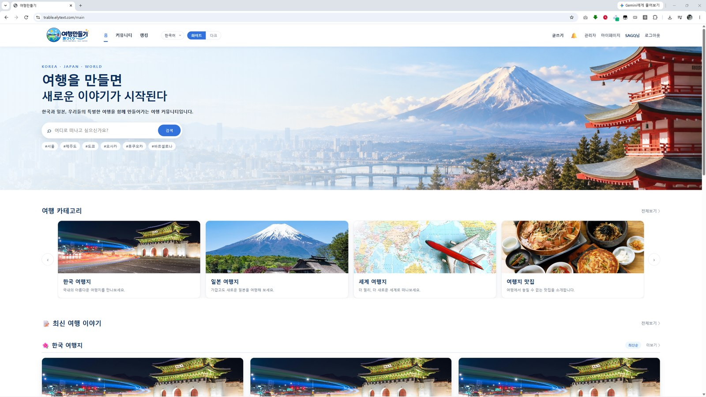
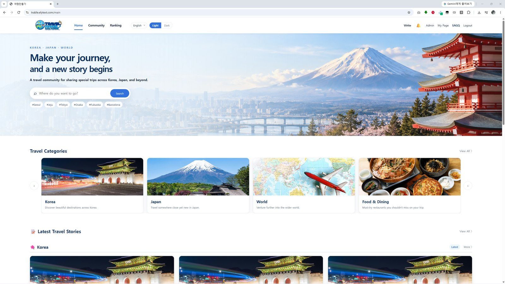
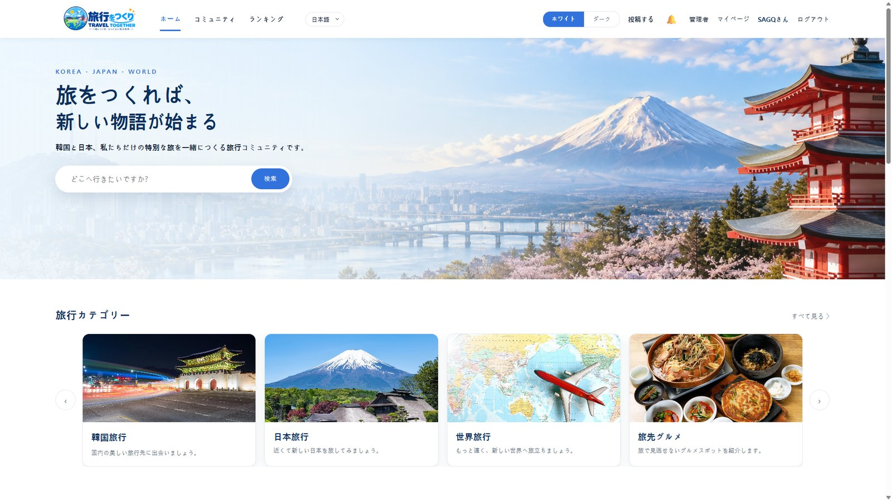
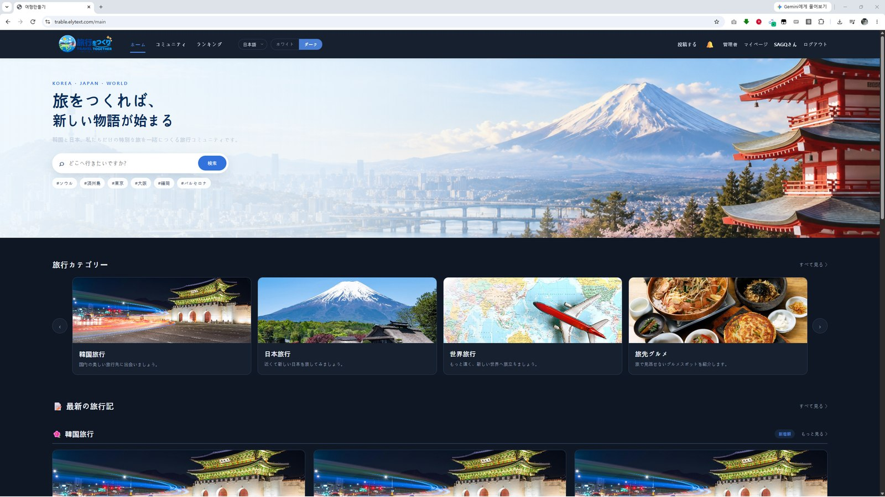
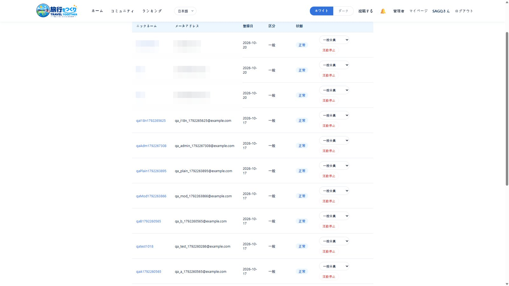
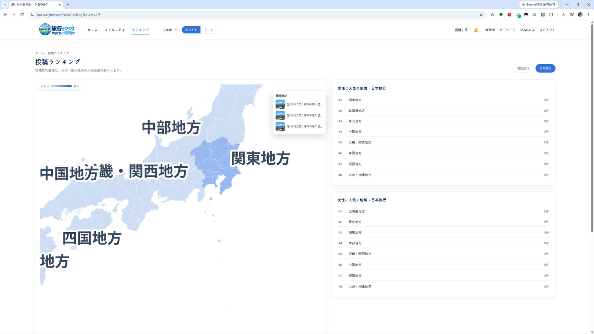
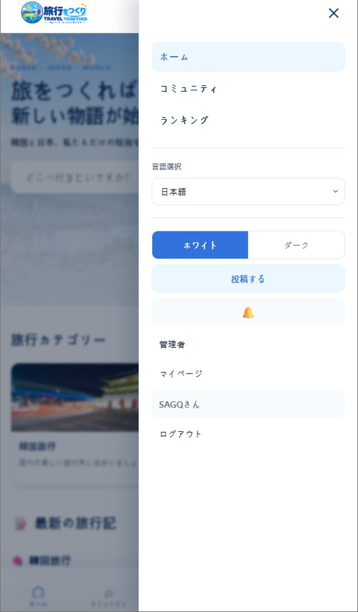

PERSONAL ENHANCEMENT
한국어
English
日本語

ライトモード
ダークモード
個人開発パート(高度化)
チームプロジェクト終了後、ポートフォリオとして個人で設計・実装した拡張機能
🌐 多言語対応(韓国語 / 英語 / 日本語)
ヘッダーの言語セレクターで即座に切替。静的テキストだけでなく、JSから動的に挿入されるコメント・通知メッセージ・地図ラベルまで全て翻訳対象。



🤖
AI活用: 動的コンテンツ(AJAX挿入分)まで一貫して翻訳が当たる仕組みの設計をAIと相談しながら構築。
🌓 ダークモード
CSS変数ベースの配色切替。ログイン時はアカウントに保存、未ログイン時はローカルストレージに保存し、次回訪問時も維持。

🛡️ 管理者権限レベル(0 / 1 / 2)
一般会員(0)・モデレーター(1)・管理者(2)の3段階。管理者のみが他会員の権限を変更可能、モデレーターは管理者の権限を変更不可、といった権限境界をバックエンド側でも二重に検証。

会員管理画面(権限レベル変更ドロップダウン・活動停止/解除ボタン) — 会員の個人情報(氏名・メールアドレス)部分はマスキング処理済み
🗺️ インタラクティブ・ランキング地図
韓国/日本の地域別投稿数をSVGコロプレス地図で可視化。ホバーで人気投稿プレビュー、クリックで該当地域の一覧へ遷移。ピンチズーム・ドラッグパンにも対応し、ズームしていない状態ではページスクロールを優先するよう調整。

日本地域別ランキング地図 — 地域ホバー時に人気投稿3件をプレビュー表示
素材 P08-video(任意)拡大/ドラッグ操作のYouTube動画リンクをもらい次第、埋め込み予定
🤖
AI活用: SVGのviewBox座標変換によるズーム/パンの実装は、カリキュラムで学んでいなかった技術。AIから数式の原理(コンテンツ座標とスクリーン座標の変換)を教わりながら学習し、自ら実装・デバッグした。
📱 モバイル対応
767px以下でドロワー型ナビゲーションに切替。地図のズーム機能とページスクロールが競合しないよう、タッチ操作のフォールバック処理も実装。

767px以下で表示されるドロワー型ナビゲーション